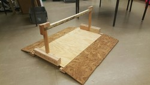
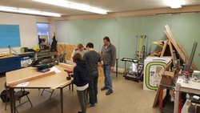
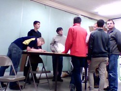

Newsfeed and Images
Off Season Competition
10-16-2016
Yesterday the team had an opportunity to attend the Pellston Off-Season competition. Throughout the day, we played 6 qualifying matches and won 5, seeding us as the third place team for the day. During the semi-finals, we were an alliance captain that won one of the three matches.
Overall the competition was a great success, as we were able to give our rookies a chance to drive the robot and see for themselves what a competition is like.
As we look forward to the kickoff of FIRST Steamworks in January of 2017, we also look for new sponsors so we can order our kit of parts to build our robots. Remember, if you our your business would like to sponsor the cadillac connectors, please email frcteam5086@gmail.com
TC Competition!
4-19-2016
TC Competition was a huge success! We made it all the way to semi-finals and beat out many larger teams,
and lost only to the team predicted to win it all and destroy all competition by only a few points. In the
words of Captain Alex Irwin,
"I'm proud of the team for solving the issues we faced in Howell.
I'm also glad that I got to experience being an alliance captain and proud
that we made it so far in competition."
I guess it's all proof that "if at first you don't succeed (Howell) then try, try, again.
.gif)
.jpg)
.jpg)
Howell Competition Photos!
4-13-2016
Here are some of the photos from our howell 2016 competition!

.jpg)
.jpg)
.jpg)
.jpg)
Howell Competition Update!
4-06-2016
Our FIRST competition is over! We had quite a few good games, and a few little mishaps. Overall we feel
that we preformed well, coming in at 28th out of 40 teams, many of whom had more years of expirience
than we did. After a week of tweaks and adjustments, we think we are ready to go to TC and be the best we
can be! Long-time mentor Jim Jakubos said, "The robot functioned as inteded, we had a few electrical and programming errors, but those have been
fixed, and we are ready for our next competition".
We made the following changes/improvements to our bot:
- We can now shoot high goals
- We secured the wiring so that it will cause less issues
- We added another autonomous program to deal with the moat
Sorry!
2-09-2016
Apologies for the giant lack of progress updates and news. As we have gotten closer to bag and tag day,
more and more information has been confidential. However, now that we are really close to bag and tag,
we feel that it would be okay to release more info in interest of our supporters and team friends. So,
in bulk, we have done a lot in terms of progress. As of me writing this, we have assembled the chassis,
and tested our ball intake and firing systems extensively. We have also started to secure components on
our electronics plate. Teleoperated Code is completed in Java, and we are on the verge of creating a few
autonomous programs. Below are some of the photos of the last few weeks.

.jpeg)
Code
1-27-2016
Today we deployed our first code to the robot, to test the spinning of the treads.
At first one spun much faster than the other, but then we fine tuned them to be in sync.
Tomorrow we plan on adding turning and a ball infeed.
Tank Tread Construction
1-26-2016
Today we finished assembling the tank treads.
Tank Treads
1-25-2016
Snow days do not stop us. Also, tank treads came in! We are working on not only building them,
but also the Sally Port. The Cheval de Frise is finished. We also started plans on the Drawbridge.
Progress Week 2 of 2016
1-22-2016
Over the past week, we have:
- Built the Rough Terrain
- Worked on CAD
- Built the Low Bar
- Built the Moat
- Built the Rock Wall
- Built the Ramparts
- Started the Chival de Frise
- Started the Sally Port
- Tidied up the website
- Worked on a prototype ball infeed / shooter
Testing Ball Shooting Capacity
1-22-2016
Today we headed over to Rexair to test the abilities of motors firing a ball. With our previous design,
we were on a 10 : 1 gearbox, and the ball shot out about as fast as a horse drawn carriage walking
through a molasses moat. So, purely to test the revolutions needed, we created a chute for the
ball to travel out of cardboard, gutted the inside of some vacuums, and spun them up to 6,000 RPM. As
you can see In the video, the ball definitely shoots.
Ball infeed
1-21-2016
Today we started work on a ball intake system for our robot. We also continued work on the
Cheval de Frise. Ball intake is going well, but we are swapping gearboxes because It doesn’t
quite have the speed we want.
Countdown and Ramparts
1-20-2016
We finished the ramparts today. Again, we have no tank treads. However, construction on the Cheval de
Frise has begun, as well as the Sally Port. We also worked on gearboxes. CAD is ever closer. Website
team (All of me, myself, and I) have coded the following segment to add a countdown to the homepage.
Credit to Joseph Foster @ frccountdown.hosthorde.net
for the Idea.

.jpg)
Another Day, Another few defences
1-19-2016
Today we finished the Low bar, Moat, and Rock Wall. We also started work on the ramparts.
Still no sign of tank treads :( . Code and Build teams are waiting. CAD is getting closer.
We also worked on some website things, fonts and colors!

Rough is done, Moat is next
1-18-2016
Today we worked a lot on building defences. We finished our rough terrain, and started work on the moat.
We are currently waiting for the tank treads to come in, then we will start work on the Robot. Some of
us worked on CAD designs or coding. Overall, we would like to have 2-3 more defences done tomorrow.

Designing CAD
1-15-2016
We have drawn up our designs for the robot by hand on paper and whiteboard over the past few days,
now it is time for us to CAD them up. We are currently building our model defences and testing the
roboRIO (We had a problem with this "Robot Brain" from last year). A few days ago we ordered our parts
(Tank treads), and will start building as soon as they come in. Expect weekday progress reports from
here on out!

Preparing for 2016!
1-7-2016
Our team is ramping up for the kickoff! We are planning on beginning work on our robot on kickoff day, and working for 4-5 hours per day, every week day, for the six week build session. Today we worked on cleaning up our working space in the Junior High.